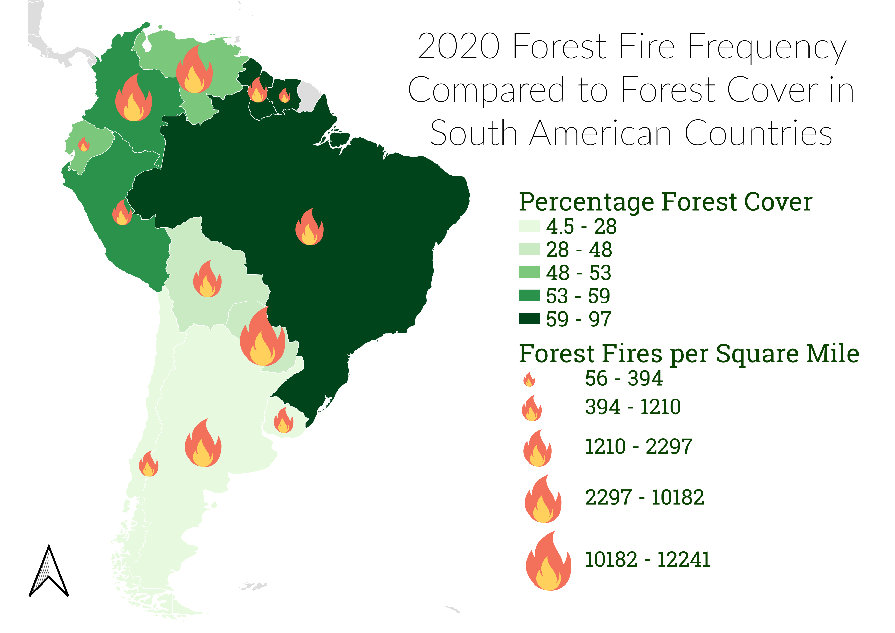

Homework 9: Thematic Maps
Heidi Hannoush
This map shows the relationship between forest cover and forest fires in South American countries. Forest cover data is represented by a choropleth; the darker greens symbolize countries with higher percentages of forest cover based on their square mile size in 2020.
Forest fire data is shown with proportional symbols and was calculated as 2020 forest fire occurance per square mile of each country. The larger the flame symbol, the more forest fires occured in 2020 per square mile of a country
I chose this topic because I was interested to see if countries with less forest cover would experience more forest fires. I was interested in looking at this data after hearing so much about forest fires in the Amazon, and especially Brazil, this past year.
While some countries with lower percentage forest cover have a greater density of fires, there does not seem to be a pattern. This may because there are several factors that could affect fire occurance besides forest cover, such as humidity and average temperature. It may have been easier to see a pattern on a closer scale where there is not so much variation in climate and deforestation may be one of the only factors affecting whether forest fires start or not.

Data used for this project
Forest Cover Data Website
Forest Fire Data Website
CSV dataset: Forest Cover
CSV dataset: Forest Fires
Vector Shapefile
Thanks for stopping by!